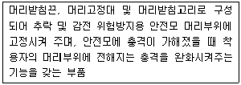
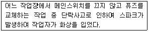
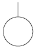
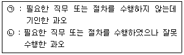
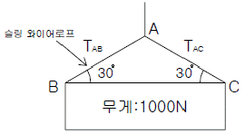

산업안전산업기사 (2014-08-17 기출문제)
1과목: 산업안전관리론
1. 다음 중 안전교육의 4단계를 올바르게 나열한 것은?
- 제시 → 확인 → 적용 → 도입
- 확인 → 도입 → 제시 → 적용
- 도입 → 제시 → 적용 → 확인
- 제시 → 도입 → 확인 → 적용
(정답률: 72%)

2. 다음 중 재해예방의 4원칙에 해당되지 않는 것은?
- 대책 선정의 원칙
- 손실 우연의 원칙
- 통계 방법의 원칙
- 예방 가능의 원칙
(정답률: 92%)
3. 다음 중 인간의 행동에 대한 레빈(K. Lewin)의 식 “B=f(PㆍE) 에서 인간관계 요인을 나타내는 변수에 해당하는 것은?
- B(Behavior)
- f(Function)
- P(Person)
- E(Environment)
(정답률: 82%)
4. 리더십의 3가지 유형 중 지도자가 모든 정책을 단독으로 결정하기 때문에 부하 직원들은 오로지 따르기만 하면 된다는 유형을 무엇이라 하는가?
- 민주형
- 자유방임형
- 귄위형
- 강제형
(정답률: 84%)
5. 보호구의 의무안전인증기준에 있어 다음 설명에 해당하는 부품의 명칭으로 옳은 것은?

- 챙
- 착장체
- 모체
- 충격흡수재
(정답률: 65%)
6. 다음 중 학습의 연속에 있어 앞(前)의 학습이 뒤(後)의 학습을 방해하는 조건과 가장 관계가 적은 경우는?
- 앞의 학습이 불완전한 경우
- 앞과 뒤의 학습 내용이 다른 경우
- 앞과 뒤의 학습 내용이 서로 반대인 경우
- 앞의 학습 내용을 재생하기 직전에 실시하는 경우
(정답률: 58%)
7. 다음 중 무재해운동의 실천 기법에 브레인스토밍(Brain storming)의 4원칙에 해당하지 않는 것은?
- 수정발언
- 비판금지
- 본질추구
- 대량발언
(정답률: 69%)
8. 다음 중 허즈버그의 2요인 이론에 있어 직무만족에 의한 생산능력의 증대를 가져올 수 있는 동기부여 요인은?
- 작업조건
- 정책 및 관리
- 대인관계
- 성취에 대한 인정
(정답률: 82%)
9. 다음 중 피로(fatigue)에 관한 설명으로 가장 적절하지 않은 것은?
- 피로는 신체의 변화, 스스로 느끼는 권태감 및 작업 능률의 저하 등을 총칭하는 말이다.
- 급성 피로란 보통의 휴식으로는 회복이 불가능한 피로를 말한다.
- 정신 피로는 정신적 긴장에 의해 일어나는 중추신경계의 피로로 사고활동, 정서 등의 변화가 나타난다.
- 만성 피로란 오랜 기간에 걸쳐 축적되면 일어나는 피로를 말한다.
(정답률: 90%)
10. 다음 중 산업안전보건법상 안전관리자의 직무에 해당되지 않는 것은? (단, 기타 안전에 관한 사항으로서 고용노동부장관이 정하는 사항은 제외한다.)
- 안전ㆍ보건에 관한 노사협의체에서 심의ㆍ의결한 직무
- 작업장 내에서 사용되는 전체 환기장치 및 국소 배기 장치 등에 관한 설비의 점검
- 의무안전인증대상기계ㆍ기구 등과 자율안전확인대상 기계ㆍ기구 등의 구입시 적격품의 선정
- 해당 사업장의 안전보건관리규정 및 취업규칙에서 정한 직무
(정답률: 65%)
11. 인간의 행동은 사람의 개성과 환경에 영향을 받는데 다음 중 환경적 요인이 아닌 것은?
- 책임
- 작업조건
- 감독
- 직무의 안정
(정답률: 64%)
12. 다음 중 안전점검의 목적과 가장 거리가 먼 것은?
- 기기 및 설비의 결함제거로 사전 안전성 확보
- 인적측면에서의 안전한 행동 유지
- 기기 및 설비의 본래성능 유지
- 생산제품의 품질관리
(정답률: 83%)
13. 다음 중 강의계획 수립 시 학습목적 3요소가 아닌 것은?
- 목표
- 주제
- 학습정도
- 교재내용
(정답률: 74%)
14. 다음 중 안전ㆍ보건교육 계획수립에 반드시 포함하여야 할 사항이 아닌 것은?
- 교육 지도안
- 교육의 목표 및 목적
- 교육장소 및 방법
- 교육의 종류 및 대상
(정답률: 60%)
15. 다음 중 도미노이론에서 사고의 직접원인이 되는 것은?
- 통제의 부족
- 유전과 환경적 영향
- 불안전한 행동과 상태
- 관리 구조의 부적절
(정답률: 81%)
16. 산업안전보건법령에 따라 작업장 내에 사용하는 안전ㆍ보건표지의 종류에 관한 설명으로 옳은 것은?
- “위험장소”는 경고표지로서 바탕은 노란색, 기본모형은 검은색, 그림은 흰색으로 한다.
- “출입금지”는 금지표지로서 바탕은 흰색, 기본모형은 빨간색, 그림은 검은색으로 한다.
- “녹십자표지”는 안내표지로서 바탕은 흰색, 기본모형과 관련 부호는 녹색, 그림은 검은색으로 한다.
- “안전모착용”은 경고표지로서 바탕은 파란색, 관련 그림은 검은색으로 한다.
(정답률: 76%)
17. 다음과 같은 재해의 분석으로 옳은 것은?

- 화상 : 상해의 형태
- 스파크의 발생 : 재해
- 메인 스위치를 끄지 않음 : 간접원인
- 스위치를 끄지 않고 퓨즈 교체 : 불안전한 상태
(정답률: 71%)
18. 연간 상시근로자수가 500명인 A 사업장에서 1일 8시간씩 연간 280일을 근무하는 동안 재해가 36건이 발생하였다면 이 사업장의 도수율은 약 얼마인가?
- 10
- 10.14
- 30
- 32.14
(정답률: 67%)
19. 다음 중 칼날이나 뾰족한 물체 등 날카로운 물건에 찔린 상해를 무엇이라 하는가?
- 자상
- 창상
- 절상
- 찰과상
(정답률: 81%)
20. 산업안전보건법령상 사업 내 안전ㆍ보건교육과정 중 일용근로자의 채용 시 교육시간으로 옳은 것은?
- 1시간 이상
- 2시간 이상
- 3시간 이상
- 4시간 이상
(정답률: 81%)
2과목: 인간공학 및 시스템안전공학
21. 반경 7cm의 조종구를 30° 움직일 때 계기판의 표시가 3cm 이동하였다면 이 조종장치의 C/R비는 약 얼마인가?
- 0.22
- 0.38
- 1.22
- 1.83
(정답률: 56%)
22. 다음 중 결함수분석법에서 사용하는 기호의 명칭으로 옳은 것은?

- 결함사상
- 기본사상
- 생략사상
- 통상사상
(정답률: 91%)
23. 다음 중 결함수분석법에 관한 설명으로 틀린 것은?
- 잠재위험을 효율적으로 분석한다.
- 연역적 방법으로 원인을 규명한다.
- 복잡하고 대형화된 시스템의 분석에 사용한다.
- 정성적 평가보다 정량적 평가를 먼저 실시한다.
(정답률: 78%)
24. 다음 중 눈의 구조 가운데 기능 결함이 발생할 경우 색맹 또는 색약이 되는 세포는?
- 간상세포
- 원추세포
- 수평세포
- 양극세포
(정답률: 76%)
25. 다음 중 기능식 생산에서 유연생산 시스템 설비의 가장 적합한 배치는?
- 유자(U)형 배치
- 일자(―)형 배치
- 합류(Y)형 배치
- 복수라인(〓)형 배치
(정답률: 83%)
26. 인간의 신뢰성 요인 중 경험연수, 지식수준, 기술수준에 의존하는 요인은?
- 주의력
- 긴장수준
- 의식수준
- 감각수준
(정답률: 67%)
27. 다음 중 FTA에서 어떤 고장이나 실수를 일으키지 않으면 정상사상(top event)은 일어나지 않는다고 하는 것으로 시스템의 신뢰성을 표시하는 것은?
- cut set
- minimal cut set
- free event
- minimal path set
(정답률: 73%)
28. 다음 중 선 자세와 앉은 자세의 비교에서 틀린 것은?(문제 오류로 실제 시험장에서는 1, 4번이 정답 처리 되었습니다. 여기서는 1번을 누르면 정답 처리 됩니다.)
- 서 있는 자세보다 앉은 자세에서 혈액순환이 향상된다.
- 서 있는 자세보다 앉은 자세에서 균형감이 높다.
- 서 있는 자세보다 앉은 자세에서 정확한 팔 움직임이 가능하다.
- 앉은 자세보다 서 있는 자세에서 척추에 더 많은 해를 줄 수 있다.
(정답률: 85%)
29. 6개의 표시장치를 수평으로 배열할 경우 해당 제어장치를 각각의 그 아래에 배치하면 좋아지는 양립성의 종류는?
- 공간 양립성
- 운동 양립성
- 개념 양립성
- 양식 양립성
(정답률: 78%)
30. 다음 중 영상표시단말기(VDT)를 취급하는 작업장에서 화면의 바탕 색상이 검정색 계통일 경우 추천되는 조명수준으로 가장 적절한 것은?
- 100~200럭스(Lux)
- 300~500럭스(Lux)
- 750~800럭스(Lux)
- 850~950럭스(Lux)
(정답률: 66%)
31. 다음 중 체계분석 및 설계에 있어서 인간공학적 노력의 효능을 산정하는 척도의 기준에 포함하지 않는 것은?(문제 오류로 실제 시험장에서는 2, 3번이 정답 처리 되었습니다. 여기서는 2번을 누르면 정답 처리 됩니다.)
- 성능의 향상
- 훈련 비용의 향상
- 인력 이용율의 저하
- 생산 및 보전의 경제성 향상
(정답률: 83%)
32. 다음 중 예비위험분석(PHA)에 대한 설명으로 가장 적합한 것은?
- 관련된 과거 안전점검결과의 조사에 적절하다.
- 안전관련 법규 조항의 준수를 위한 조사방법이다.
- 시스템 고유의 위험성을 파악하고 예상되는 재해의 위험 수준을 결정한다.
- 초기의 단계에서 시스템 내의 위험요소가 어떠한 위험 상태에 있는가를 정성적 평가하는 것이다.
(정답률: 77%)
33. 다음 설명하는 단어를 순서적으로 올 바르게 나타낸 것은?

- (ㄱ) Sequential Error (ㄴ) Extraneous Error
- (ㄱ) Extraneous Error (ㄴ) Omission Error
- (ㄱ) Omission Error (ㄴ) Commission Error
- (ㄱ) Commission Error (ㄴ) Omission Error
(정답률: 69%)
34. 다음 중 초음파의 기준이 되는 주파수로 옳은 것은?
- 4000Hz 이상
- 6000Hz 이상
- 10000Hz 이상
- 20000Hz 이상
(정답률: 61%)
35. 다음 중 인간공학(Ergonomics)의 기원에 대한 설명으로 가장 적합한 것은?
- 차패니스(Chapanis, A.)에 의해서 처음 사용되었다.
- 민간 기업에서 시작하여 군이나 군수회사로 전파되었다.
- “ergon(작업) + nomos(법칙) + ics(학문)”의 조합된 단어이다.
- 관련 학회는 미국에서 처음 설립되었다.
(정답률: 71%)
36. 지게차 인장벨트의 수명은 평균이 100000시간, 표준편차가 500시간인 정규분포를 따른다. 이 인장벨트의 수명이 101000시간 이상일 확률은 약 얼마인가? (단, 표준정규분포 표에서 Z1=0.8413, Z2=0.9772, Z3=0.9987 이다.)
- 1.60%
- 2.28%
- 3.28%
- 4.28%
(정답률: 57%)
37. 다음 중 설계강도 이상의 급격한 스트레스가 축적됨으로써 발생하는 고장에 해당하는 것은?
- 우발고장
- 초기고장
- 마모고장
- 열화고장
(정답률: 49%)
38. 잡음 등이 개입되는 통신 악조건 하에서 전달 확률이 높아지도록 전언을 구성할 때 다음 중 가장 적절하지 않은 것은?
- 표준 문장의 구조를 사용한다.
- 문장보다 독립적인 음절을 사용한다.
- 사용하는 어휘수를 가능한 적게 한다.
- 수신자가 사용하는 단어와 문장구조에 친숙해지도록 한다.
(정답률: 65%)
39. 광원으로부터 2m 떨어진 곳에서 측정한 조도가 400럭스 이고, 다른 곳에서 동일한 광원에 의한 밝기를 측정하였더니 100럭스이었다며, 두 번째로 측정한 지점은 광원으로 부터 몇 m 떨어진 곳인가?
- 4
- 6
- 8
- 10
(정답률: 50%)
40. 다음 중 위험과 운전성연구(HAZOP)에 대한 설명으로 틀린 것은?
- 전기설비의 위험성을 주로 평가하는 방법이다.
- 처음에는 과거의 경험이 부족한 새로운 기술을 적용한 공정설비에 대하여 실시할 목적으로 개발되었다.
- 설비전체보다 단위별 또는 부분별로 나누어 검토하고 위험요소가 예상되는 부문에 상세하게 실시한다.
- 장치 자체는 설계 및 제작사양에 맞게 제작된 것으로 간주하는 것이 전제 조건이다.
(정답률: 62%)
3과목: 기계위험방지기술
41. 다음과 같이 2개의 슬링 와이어로프로 무게 1000N의 화물을 인양하고 있다. 로프 TAB에 발생하는 장력의 크기는 얼마인가?

- 500N
- 707N
- 1000N
- 1414N
(정답률: 47%)
42. 다음 중 선반작업의 안전수칙을 설명한 것으로 옳지 않은 것은?
- 운전 중에는 백기어(back gear)를 사용하지 않는다.
- 센터 작업시 심압 센터에 자주 절삭유를 준다.
- 일감의 치수 측정, 주유 및 청소시에는 기계를 정지시켜야 한다.
- 가공 중 발생하는 절삭칩에 의한 상해를 방지하기 위하여 면장갑을 착용한다.
(정답률: 83%)
43. 다음 작업 중 위험한 작업점에 대한 격리형 방호장치와 가장 거리가 먼 것은?
- 안전방책
- 덮개형 방호장치
- 포집형 방호장치
- 완전차단형 방호장치
(정답률: 70%)
44. 다음 중 연삭작업에 관한 설명으로 옳은 것은?
- 일반적으로 연삭숫돌은 정면, 측면 모두를 사용할 수 있다.
- 평형 플랜지의 직경은 설치하는 숫돌 직경의 20% 이상의 것으로 숫돌바퀴에 균일하게 밀착시킨다.
- 연삭숫돌을 사용하는 작업의 경우 작업 시작 전과 연삭 숫돌을 교체 후에는 1분 이상 시험운전을 실시한다.
- 탁상용 연삭기의 덮개에는 워크레스트 및 조정편을 구비하여야 하며, 워크레스트는 연삭숫돌과의 간격을 3mm이하로 조정할 수 있는 구조이어야 한다.
(정답률: 68%)
45. 기계의 운동 형태에 따른 위험점의 분류에서 고정부분과 회전하는 동작 부분이 함께 위험점으로 교반기의 날개와 하우스 등에서 발생하는 위험점을 무엇이라 하는가?
- 끼임점
- 절단점
- 물림점
- 회전말림점
(정답률: 77%)
46. 다음 중 욕조 형태를 갖는 일반적인 기계 고장 곡선에서의 기본적인 3가지 고장 유형이 아닌 것은?
- 우발고장
- 피로고장
- 초기고장
- 마모고장
(정답률: 79%)
47. 기계의 안전을 확보하기 위해서는 안전율을 고려하여야 하는데 다음 중 이에 관한 설명으로 틀린 것은?
- 기초강도와 허용응력과의 비를 안전율이라 한다.
- 안전율 계산에 사용되는 여유율은 연성재료에 비하여 취성재료를 크게 잡는다.
- 안전율은 크면 클수록 안전하므로 안전율이 높은 기계는 우수한 기계라 할 수 있다.
- 재료의 균질성, 응력계산의 정확성, 응력의 분포 등 각종 인자를 고려한 경험적 안전율도 사용된다.
(정답률: 63%)
48. 양수조작식 방호장치의 누름버튼에서 손을 떼는 순간부터 급정지기구가 작동하여 슬라이드가 정지할 때까지의 시간이 0.2초 걸린다면, 양수조작식 방호장치의 안전거리는 최소한 몇 mm 이상이어야 하는가?
- 150
- 320
- 480
- 560
(정답률: 76%)
49. 다음 중 천장크레인의 방호장치와 가장 거리가 먼 것은?
- 과부하방지장치
- 낙하방지장치
- 권과방지장치
- 충돌방지장치
(정답률: 48%)
50. 롤러기에서 가드의 개구부와 위험점 간의 거리가 200mm이면 개구부 간격은 얼마이어야 하는가? (단, 위험점이 전동체이다.)
- 30mm
- 26mm
- 36mm
- 20mm
(정답률: 46%)
51. 산업안전보건법령상 로봇의 작동 범위에서 그 로봇에 관하여 교시 등의 작업을 할 때 작업시작 전 점검사항에 해당하지 않는 것은?
- 제동장치 및 비상정지장치의 기능
- 외부 전선의 피복 또는 외장의 손상 유무
- 매니퓰레이터(manipulator) 작동의 이상 유무
- 주행로의 상측 및 트롤리(trolley)가 횡행하는 레일의 상태
(정답률: 57%)
52. 산업안전보건법령에 따라 보일러의 과열을 방지하기 위하여 최고사용압력과 사용압력 사이에서 보일러의 버너 연소를 차단할 수 있도록 부착하여 사용하여야 하는 장치는?
- 경보음장치
- 압력제한스위치
- 압력방출장치
- 고저수위 조절장치
(정답률: 67%)
53. 산업안전보건법령에 따라 안전난간의 구조를 올바르게 설명한 것은?
- 상부 난간대, 중간 난간대, 발끝막이판 및 난간기둥으로 구성하여야 한다.
- 발끝막이판은 바닥면 등으로부터 5cm 이하의 높이를 유지하여야 한다.
- 난간대는 지름 1.5cm 이상의 금속제 파이프를 사용하여야 한다.
- 상부 난간대, 난간기둥은 이와 비슷한 구조의 것으로 대체할 수 있다.
(정답률: 75%)
54. 다음 중 플레이너(Planer)에 관한 설명으로 틀린 것은?
- 이송운동은 절삭운동의 1왕복에 대하여 2회의 연속운동으로 이루어진다.
- 평면가공을 기준으로 하여 경사면, 홈파기 등의 가공을 할 수 있다.
- 절삭행정과 귀환행정이 있으며, 가공효율을 높이기 위하여 귀환행정을 빠르게 할 수 있다.
- 플레이너의 크기는 테이블의 최대행정과 절삭할 수 있는 최대폭 및 최대 높이로 표시한다.
(정답률: 54%)
55. 다음 중 셰이퍼에 의한 연강 평면절삭 작업시 안전 대책으로 적절하지 않은 것은?
- 공작물은 견고하게 고정하여야 한다.
- 바이트는 가급적 짧게 물리도록 한다.
- 가공 중 가공면의 상태는 손으로 점검한다.
- 작업 중에는 바이트의 운동방향에 서지 않도록 한다.
(정답률: 84%)
56. 산업안전보건법령에 따라 목재가공용 기계에 설치하여야 하는 방호장치의 내용으로 틀린 것은?
- 목재가공용 둥근톱기계에는 분할날 등 반발예방장치를 설치하여야 한다.
- 목재가공용 둥근톱기계에는 톱날접촉예방장치를 설치 하여야 한다.
- 모떼기기계에는 가공 중 목재의 회전을 방지하는 회전 방지장치를 설치하여야 한다.
- 작업대상물이 수동으로 공급되는 동력식 수동대패기계에 날접촉예방장치를 설치하여야 한다.
(정답률: 74%)
57. 다음 중 밀링작업의 안전사항으로 적절하지 않은 것은?
- 측정시에는 반드시 기계를 정지시킨다.
- 절삭 중의 칩 제거는 칩브레이커로 한다.
- 일감을 풀어내거나 고정할 때에는 기계를 정지시킨다.
- 상하 이송장치의 핸들은 사용 후 반드시 빼 두어야 한다.
(정답률: 83%)
58. 다음 중 드릴작업시 가장 안전한 행동에 해당하는 것은?
- 장갑을 끼고 작업한다.
- 작업 중 브러시로 칩을 털어 낸다.
- 작은 구멍을 뚫고 큰 구멍을 뚫는다.
- 드릴을 먼저 회전시키고 공작물을 고정한다.
(정답률: 81%)
59. 산업안전보건법령상 롤러기 조작부의 설치 위치에 따른 급정지장치의 종류가 아닌 것은?
- 손조작식
- 복부조작식
- 무릎조작식
- 발조작식
(정답률: 82%)
60. 산업안전보건법령상 근로자가 위험해질 우려가 있는 경우 컨베이어에 부착, 조치하여야 할 방호장치가 아닌 것은?
- 안전매트
- 비상정지장치
- 덮개 또는 울
- 이탈 및 역주행 방지 장치
(정답률: 77%)
4과목: 전기 및 화학설비위험방지기술
61. 전기설비의 화재에 사용되는 소화기의 소화제로 가장 적절한 것은?
- 물거품
- 탄산가스
- 염화칼슘
- 산 및 알칼리
(정답률: 66%)
62. 누전 경보기의 수신기는 옥내의 점검에 편리한 장소에 설치하여야 한다. 이 수신기의 설치장소로 옳지 않는 것은?
- 습도가 낮은 장소
- 온도의 변화가 거의 없는 장소
- 화약류를 제조하거나 저장 또는 취급하는 장소
- 부식성 증기와 가스는 발생되나 방식이 되어있는 곳
(정답률: 64%)
63. 다음 중 교류 아크 용접작업시 작업자에게 발생할 수 있는 재해의 종류와 가장 거리가 먼 것은?
- 낙하ㆍ충돌 재해
- 피부 노출시 화상 재해
- 폭발, 화재에 의한 재해
- 안구(눈)의 조직손상 재해
(정답률: 86%)
64. 정상운전 중의 전기설비가 점화원으로 작용하지 않는 것은?
- 변압기 권선
- 보호계전기 접점
- 직류 전동기의 정류자
- 권선형 전동기의 슬립링
(정답률: 58%)
65. 변압기의 내부고장을 예방하려면 어떤 보호계전방식을 선택하는가?(문제 오류로 실제 시험장에서는 1, 4번이 정답 처리 되었습니다. 여기서는 1번을 누르면 정답 처리 됩니다.)
- 차동계전방식
- 과전류계전방식
- 과전압계전방식
- 부흐홀쯔계전방식
(정답률: 76%)
66. 정전기 발생량과 관련된 내용으로 옳지 않는 것은?
- 분리속도가 빠를수록 정전기량이 많아진다.
- 두 물질간의 대전서열이 가까울수록 정전기 발생량이 많다.
- 접촉면적이 넓을수록, 접촉압력이 증가할수록 정전기 발생량이 많아진다.
- 물질의 표면이 수분이나 기름 등에 오염되어 있으면 정전기 발생량이 많아진다.
(정답률: 61%)
67. 전기사용장소의 사용전압이 440V인 저압전로의 전선 상호간 및 전로와 대지 사이의 절연저항은 얼마 이상이어야 하는가?(오류 신고가 접수된 문제입니다. 반드시 정답과 해설을 확인하시기 바랍니다.)
- 0.1MΩ
- 0.4MΩ
- 0.5MΩ
- 1.0MΩ
(정답률: 66%)
68. 이동전선에 접속하여 임시로 사용하는 전등이나 가설의 배선 또는 이동전선에 접속하는 가공매달기식 전등 등을 접촉함으로 인한 감전 및 전구의 파손에 의한 위험을 방지하기 위하여 부착하여야 하는 것은?
- 퓨즈
- 누전차단기
- 보호망
- 회로차단기
(정답률: 53%)
69. 방전에너지가 크지 않은 코로나 방전이 발생할 경우 공기중에 발생할 수 있는 것은?
- O2
- O3
- N2
- N3
(정답률: 64%)
70. 다음 중 전자, 통신기기 등의 전자파장해(EMI)를 방지하기 위한 조치로 가장 거리가 먼 것은?
- 절연을 보강한다.
- 접지를 실시한다.
- 필터를 설치한다.
- 차폐체를 설치한다.
(정답률: 36%)
71. 다음 각 물질의 저장방법에 관한 설명으로 옳은 것은?
- 황린은 저장용기 중에 물을 넣어 보관한다.
- 과산화수소는 장기 보존시 유리용기에 저장된다.
- 피크린산은 철 또는 구리로 된 용기에 저장한다.
- 마그네슘은 다습하고 통풍이 잘 되는 장소에 보관한다.
(정답률: 80%)
72. 다음 중 공정안전보고서에 관한 설명으로 틀린 것은?
- 사업주가 공정안전보고서를 작성한 후에는 별도의 심의 과정이 없다.
- 공정안전보고서를 제출한 사업주는 정하는 바에 따라 고용노동부장관의 확인을 받아야 한다.
- 고용노동부장관은 공정안전보고서의 이행 상태를 평가하고 그 결과에 따라 공정안전보고서를 다시 제출하도록 명할 수 있다.
- 고용노동부장관은 공정안전보고서를 심사한 후 필요하다고 인정하는 경우에는 그 공정안전보고서의 변경을 명할 수 있다.
(정답률: 83%)
73. 산화성 액체의 성질에 관한 설명으로 옳지 않은 것은?
- 피부 및 의복을 부식하는 성질이 있다.
- 가연성 물질이 많으므로 화기에 극도로 주의한다.
- 위험물 유출시 건조사를 뿌리거나 중화제로 중화한다.
- 물과 반응하면 발열반응을 일으키므로 물과의 접촉을 피한다.
(정답률: 48%)
74. 취급물질에 따라 여러 가지 증류 방법이 있는데, 다음 중 특수 증류방법이 아닌 것은?
- 감압 증류
- 추출 증류
- 공비 증류
- 기ㆍ액 증류
(정답률: 58%)
75. 다음 중 소화방법의 분류에 해당하지 않는 것은?
- 포소화
- 질식소화
- 희석소화
- 냉각소화
(정답률: 65%)
76. 다음 중 만성중독과 가장 관계가 깊은 유독성 지표는?
- LD50(Median Lethal dose)
- MLD(Minimum lethal dose)
- TLV(Threshold limit value)
- LC50(Median lethal concentration)
(정답률: 56%)
77. 후드의 설치 요령으로 옳지 않은 것은?
- 충분한 포집속도를 유지한다.
- 후드의 개구면적은 작게 한다.
- 후드는 되도록 발생원에 접근시킨다.
- 후드로부터 연결된 덕트는 곡선화 시킨다.
(정답률: 50%)
78. 헥산 5vol%, 메탄 4vol%, 에틸렌 1vol% 로 구성된 혼합가스의 연소하한값(vol%)은 약 얼마인가? (단, 각 가스의 공기 중 연소하한값으로 헥산은 1.1vol%, 메탄은 5.0vol%, 에틸렌은 2.7vol% 이다.)
- 0.58
- 1.75
- 2.72
- 3.72
(정답률: 54%)
79. 다음 중 화학반응에 의해 발생하는 열이 아닌 것은?
- 연소열
- 압축열
- 반응열
- 분해열
(정답률: 65%)
80. 공정별로 폭발을 분류할 때 물리적 폭발이 아닌 것은?
- 분해폭발
- 탱크의 감압폭발
- 수증기 폭발
- 고압용기의 폭발
(정답률: 66%)
5과목: 건설안전기술
81. 차량계 건설기계를 사용하여 작업하고자 할 때 작업계획서에 포함되어야 할 사항으로 틀린 것은?
- 차량계 건설기계의 제동장치 이상유무
- 차량계 건설기계의 운행경로
- 차량계 건설기계의 종류 및 성능
- 차량계 건설기계에 의한 작업방법
(정답률: 53%)
82. 철근을 인력으로 운반할 때의 주의사항으로 틀린 것은?
- 긴 철근은 2인 1조가 되어 어깨메기로 운반한다.
- 긴 철근을 부득이 1인이 운반할 때는 철근의 한쪽을 어깨에 메고 다른 한쪽 끝을 땅에 끌면서 운반한다.
- 1인이 1회에 운반할 수 있는 적당한 무게한도는 운반자의 몸무게 정도이다.
- 운반시에는 항상 양끝을 묶어 운반한다.
(정답률: 71%)
83. 철골공사 시 안전을 위한 사전 검토 계획수립을 할 때 가장 거리가 먼 내용은?
- 추락방지망의 설치
- 사용기계의 용량 및 사용대수
- 기상조건의 검토
- 지하매설물 조사
(정답률: 52%)
84. 안전난간은 구조적으로 가장 취약한 지점에서 가장 취약한 방향으로 작용하는 최소 얼마 이상의 하중에 견딜 수 있어야 하는가?
- 50kg
- 100kg
- 150kg
- 200kg
(정답률: 76%)
85. 옹벽 안정조건의 검토사항이 아닌 것은?
- 활동(sliding)에 대한 안전검토
- 전도(overturing)에 대한 안전검토
- 보일링(boiling)에 대한 안전검토
- 지반 지지력(settlement)에 대한 안전검토
(정답률: 56%)
86. 흙막이 가시설의 버팀대(Strut)의 변형을 측정하는 계측기에 해당하는 것은?
- Water level meter
- Strain gauge
- Piezometer
- Load cell
(정답률: 67%)
87. 추락방지용 방망의 지지점은 최소 몇 kgf 이상의 외력에 견딜 수 있어야 하는가?
- 300kgf
- 500kgf
- 600kgf
- 1000kgf
(정답률: 59%)
88. 철근콘크리트 슬래브에 발생하는 응력에 대한 설명으로 틀린 것은?
- 전단력은 일반적으로 단부보다 중앙부에서 크게 작용 한다.
- 중앙부 하부에는 인장응력이 발생한다.
- 단부 하부에는 압축응력이 발생한다.
- 휨응력은 일반적으로 슬래브의 중앙부에서 크게 작용한다.
(정답률: 61%)
89. 단면적이 800mm2인 와이어로프에 의지하여 체중 800N 인 작업자가 공중 작업을 하고 있다면 이 때 로프에 걸리는 인장응력은 얼마인가?
- 1MPa
- 2MPa
- 3MPa
- 4MPa
(정답률: 74%)
90. 철근의 가스절단 작업 시 안전 상 유의해야 할 사항으로 틀린 것은?
- 작업장에는 소화기를 비치하도록 한다.
- 호스, 전선 등은 다른 작업장을 거치는 곡선상의 배선이어야 한다.
- 전선의 경우 피복이 손상되어 있는지를 확인하여야 한다.
- 호스는 작업중에 겹치거나 밟히지 않도록 한다.
(정답률: 83%)
91. 경화된 콘크리트의 각종 강도를 비교한 것 중 옳은 것은?
- 전단강도 > 인장강도 > 압축강도
- 압축강도 > 인장강도 > 전단강도
- 인장강도 > 압축강도 > 전단강도
- 압축강도 > 전단강도 > 인장강도
(정답률: 44%)
92. 추락시 로프의 지지점에서 최하단까지의 거리(h)를 구하는 식으로 옳은 것은?
- h = 로프의 길이 + 신장
- h = 로프의 길이 + 신장/2
- h = 로프의 길이 + 로프의 늘어난 길이 + 신장
- h = 로프의 길이 + 로프의 늘어난 길이 + 신장/2
(정답률: 69%)
93. 콘크리트의 유동성과 묽기를 시험하는 방법은?
- 다짐시험
- 슬럼프시험
- 압축강도시험
- 평판시험
(정답률: 68%)
94. 건축물의 층고가 높아지면서, 현장에서 고소작업대의 사용이 증가하고 있다. 고소작업대의 사용 및 설치기준으로 옳은 것은?(오류 신고가 접수된 문제입니다. 반드시 정답과 해설을 확인하시기 바랍니다.)
- 작업대를 와이어로프 또는 체인으로 올리거나 내릴 경우에는 와이어로프 또는 체인의 안전율은 10 이상일 것
- 작업대를 올린 상태에서 항상 작업자를 태우고 이동할 것
- 바닥과 고소작업대는 가능하면 수직을 유지하도록 할 것
- 갑작스러운 이동을 방지하기 위하여 아웃트리거(outrigger) 또는 브레이크 등을 확실히 사용할 것
(정답률: 46%)
95. 토공사용 건설장비 중 굴착기계가 아닌 것은?
- 파워 셔블
- 드래그 셔블
- 로더
- 드래그 라인
(정답률: 69%)
96. 흙의 입도 분포와 관련한 삼각좌표에 나타나는 흙의 분류에 해당되지 않는 것은?
- 모래
- 점토
- 자갈
- 실트
(정답률: 55%)
97. 거푸집 및 동바리 설계 시 적용하는 연직방향하중에 해당되지 않는 것은?
- 철근콘크리트의 자중
- 작업하중
- 충격하중
- 콘크리트의 측압
(정답률: 76%)
98. 프리캐스트 부재의 현장야적에 대한 설명으로 틀린 것은?
- 오물로 인한 부재의 변질을 방지한다.
- 벽 부재는 변형을 방지하기 위해 수평으로 포개 쌓아 놓는다.
- 부재의 제조번호, 기호 등을 식별하기 쉽게 야적한다.
- 받침대를 설치하여 휨, 균열 등이 생기지 않게 한다.
(정답률: 74%)
99. 흙의 동상현상을 재배하는 인자가 아닌 것은?
- 흙의 마찰력
- 동결지속시간
- 모관 상승고의 크기
- 흙의 투수성
(정답률: 46%)
100. 암질 변화 구간 및 이상 암질 출현시 판별 방법과 가장 거리가 먼 것은?
- R.Q.D
- R.M.R
- 지표침하량
- 탄성파 속도
(정답률: 63%)
안전교육의 4단계는 다음과 같습니다.
1. 도입: 안전교육을 시작하기 전에 교육 대상자들에게 교육의 목적과 중요성을 설명합니다.
2. 제시: 안전교육의 내용을 구체적으로 제시합니다. 이 단계에서는 안전 규정, 위험요소, 안전장비 등을 설명합니다.
3. 적용: 교육 대상자들이 실제로 안전규정을 준수하고 안전장비를 사용하는 등 안전한 행동을 취할 수 있도록 실습과 시뮬레이션 등을 통해 교육합니다.
4. 확인: 교육 후 교육 대상자들이 안전규정을 잘 준수하고 안전한 행동을 취하고 있는지 확인합니다. 이를 통해 교육의 효과를 평가하고 보완할 부분을 파악합니다.
따라서, "도입 → 제시 → 적용 → 확인" 순서대로 진행하여야 안전교육의 효과를 극대화할 수 있습니다.